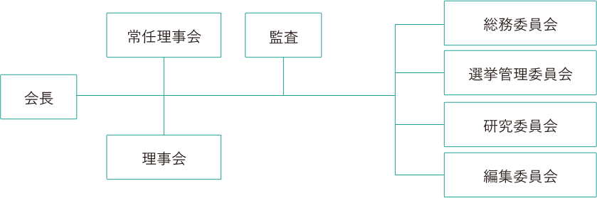

日本犯罪心理学会会長挨拶
平成３０年１２月の日本犯罪心理学会第５６回大会の総会において会長に選出されました。長い伝統のある日本犯罪心理学会の会長に選出されたことは大変光栄であると同時に、責任の重さに身の引き締まる思いです。
心理学を巡る最近の動きとして、公認心理師法が施行され、平成３０年９月に第一回の公認心理師試験が実施されました。会員の中にも公認心理師の資格を取得した人が多数いらっしゃると思います。新しい資格ですので、どのような運用がなされるのか、臨床心理士との関係がどうなるのかなど、まだ不透明な部分もあります。当学会としても、運用状況等を把握し、会員への情報の提供に努めていきたいと考えております。
日本犯罪心理学会は、会員数が１４００名を越える大きな組織になりました。そのため、会員相互の意思疎通、会員間での情報の共有など、学会としての活動の一層の活性化が望まれますし、それを支える組織体制の整備なども必要になってくると考えられます。会員へのフィードバックのあり方について検討し、その一環として、２０１８年６月には、第一回全国研修会を開催しました。会員の研修の場として、毎年開催することとしております。また、会員のコミュニケーションを一層促進するとともに、社会への情報発信を活発化させるために、ホームページの見直しを進めております。
年次大会には、毎回５００名程度の会員に参加していただいております。また、毎年２回（大会の報告を掲載する特別号を加えると年３回）発刊されている機関誌「犯罪心理学研究」についても、論文の投稿数が増加傾向にあると感じております。大会及び機関誌は、会員の研究成果の発表の場であると同時に、会員相互の意見交換・コミュニケーションの場でもありますので、さらに充実させていきたいと考えております。
日本犯罪心理学会の諸活動がより一層活発なものとなるよう微力を尽くす所存ですので、皆様の御支援をよろしくお願い申し上げます。
（2019.3.23）
日本犯罪心理学会会長 久保 貴
沿革等
- 設立
- 昭和38年
- 会員数
- 1,428名（平成31年3月現在）
- 事務局所在地
- 東京都新宿区
- 沿革
-
- 昭和
-
-
昭和
矯正心理研究会 発足、会則制定
-
昭和
「矯正心理会報」第1号
-
昭和
「矯正心理」創刊号
-
昭和
日本心理学会改組、及び心理技術者資格認定の問題を契機として、矯正心理学会に関する打ち合わせ会を開催。
-
昭和
犯罪心理学会設立趣意書
-
昭和
日本犯罪心理学会会則施行、設立準備委員会が会務を執行
-
昭和
「犯罪心理学研究」第1巻第1号発行
-
昭和
日本犯罪心理学会第1回大会開催（以降毎年開催）
-
昭和
第1回役員選挙、第1回総会開催
-
- 平成
-
-
平成
50周年記念特集号発刊
-
平成
日本犯罪心理学会第51回大会開催
-
活動案内
組織（理事、委員）
- 常任理事（任期 平成30～令和3年）
- 朝比奈牧子 岡本吉生 越智啓太 門本泉
川邉譲 桐生正幸 小林万洋 寺村堅志
藤野京子 吉村雅世 - ※全国理事、地方理事については、会誌の会務報告に掲載しています。
- 組織図

会の運営は，選挙によって選ばれた理事によって行われます。
重要な議決は理事会において諮られ，総会により審議されます。
各種規約等リンク
研究助成に係る規約
入会等、事務局の連絡先は下記のとおりです。ただし、個々の事件に対するコメントや、会員の個人情報についてのお問い合わせはお受けできませんので予めご了承ください。
また、事務局へのお問い合わせは原則として電子メールかFAXでお願いいたします。
- 〒162-0801東京都新宿区山吹町358-5
- 電話03-6824-9379
- FAX03-5227-8631
- E-MAILjacp-post@bunken.co.jp
- 銀行口座三井住友銀行池袋東口支店 普通預金口座 8069331
- 郵便振替00120-9-37064